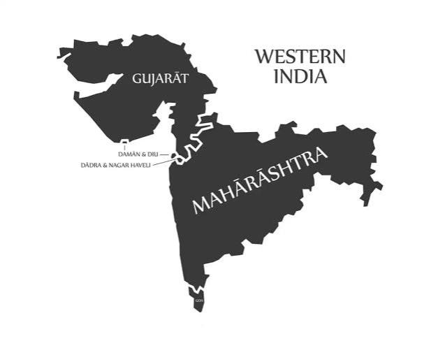

In North India, NIIT Foundation operates several centers aimed at enhancing employability among youth, particularly from underprivileged backgrounds.
Delhi: A notable initiative is the NIIT Yuvastar Career Development Centre located in Civil Lines, Delhi. This state-of-the-art center offers job-oriented training programs designed to equip students with industry-relevant skills, thereby improving their employment prospects.
Checkout the Course in Delhi Now!
Uttar Pradesh: NIIT Foundation has established skill development centers in various cities, focusing on providing vocational training and placement support to eligible students.
Checkout the Course in Uttar Pradesh Now!
Haryana: The foundation operates centers that offer a range of courses, including digital literacy, financial literacy, and professional edge programs, aiming to bridge the skill gap in the region.
Check out the Courses in Haryana now!
Punjab: Through its centers, NIIT Foundation delivers educational interventions tailored to the needs of the local population, promoting inclusive development.